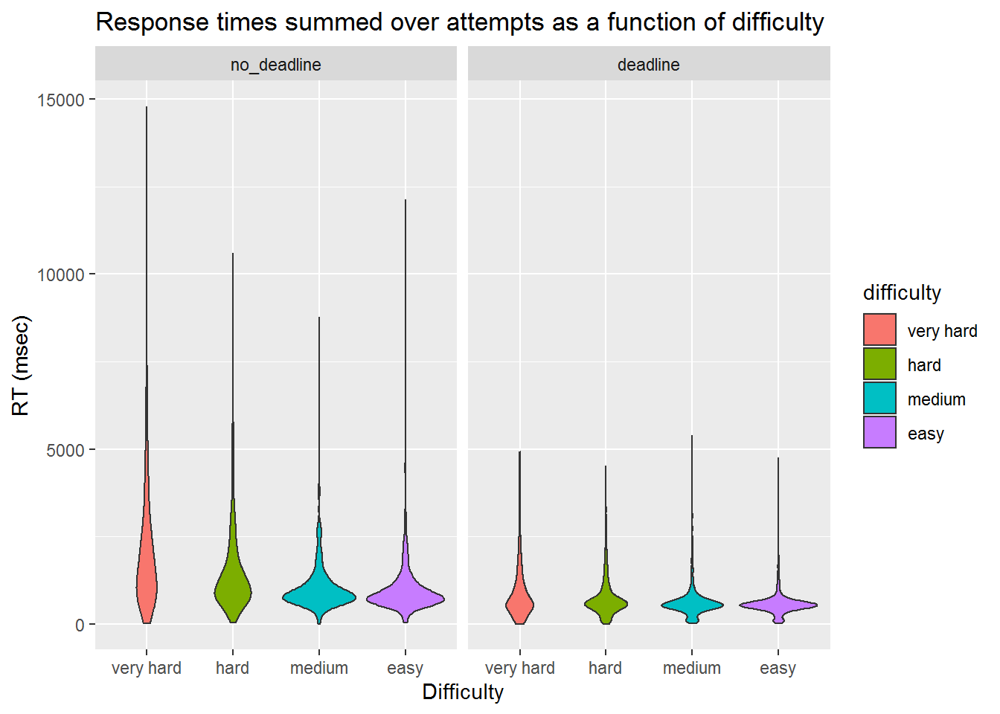
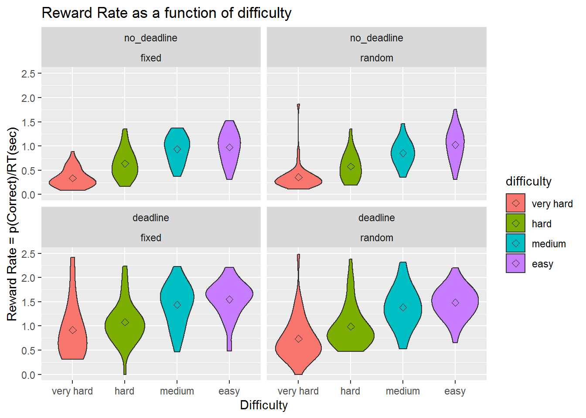

exp1_nodelay
knowlabUnimelb
2020-10-29
Last updated: 2020-10-30
Checks: 7 0
Knit directory: SCHEDULE_RT/
This reproducible R Markdown analysis was created with workflowr (version 1.6.1). The Checks tab describes the reproducibility checks that were applied when the results were created. The Past versions tab lists the development history.
Great! Since the R Markdown file has been committed to the Git repository, you know the exact version of the code that produced these results.
Great job! The global environment was empty. Objects defined in the global environment can affect the analysis in your R Markdown file in unknown ways. For reproduciblity it’s best to always run the code in an empty environment.
The command set.seed(20200416) was run prior to running the code in the R Markdown file. Setting a seed ensures that any results that rely on randomness, e.g. subsampling or permutations, are reproducible.
Great job! Recording the operating system, R version, and package versions is critical for reproducibility.
Nice! There were no cached chunks for this analysis, so you can be confident that you successfully produced the results during this run.
Great job! Using relative paths to the files within your workflowr project makes it easier to run your code on other machines.
Great! You are using Git for version control. Tracking code development and connecting the code version to the results is critical for reproducibility.
The results in this page were generated with repository version 15e51c8. See the Past versions tab to see a history of the changes made to the R Markdown and HTML files.
Note that you need to be careful to ensure that all relevant files for the analysis have been committed to Git prior to generating the results (you can use wflow_publish or wflow_git_commit). workflowr only checks the R Markdown file, but you know if there are other scripts or data files that it depends on. Below is the status of the Git repository when the results were generated:
Ignored files:
Ignored: .Rhistory
Ignored: .Rproj.user/
Ignored: analysis/patch_selection.png
Ignored: analysis/site_libs/
Untracked files:
Untracked: analysis/Notes.txt
Untracked: analysis/prereg.knit.md
Untracked: analysis/prereg.pdf
Untracked: analysis/prereg.tex
Untracked: analysis/prereg.utf8.md
Untracked: analysis/reward rate analysis.docx
Untracked: analysis/rewardRate.jpg
Untracked: data/Archive/
Unstaged changes:
Deleted: data/200428_fixed_rdk_data.csv
Deleted: data/200429_fixed_rdk_data.csv
Deleted: data/200503_fixed_rdk_data.csv
Deleted: data/200508 2020-schedule-rdk.csv
Deleted: data/200511_fixed_rdk_data.csv
Deleted: data/200515_random_rdk_data.csv
Deleted: data/200521_random_rdk_data.csv
Deleted: data/200522_random_rdk_data.csv
Deleted: data/200525_random_rdk_data.csv
Deleted: data/200606_random_rdk_data.csv
Deleted: data/test_data.csv
Deleted: data/test_data_multipleSubjects.csv
Note that any generated files, e.g. HTML, png, CSS, etc., are not included in this status report because it is ok for generated content to have uncommitted changes.
These are the previous versions of the repository in which changes were made to the R Markdown (analysis/exp1_nodelay.Rmd) and HTML (docs/exp1_nodelay.html) files. If you’ve configured a remote Git repository (see ?wflow_git_remote), click on the hyperlinks in the table below to view the files as they were in that past version.
| File | Version | Author | Date | Message |
|---|---|---|---|---|
| html | 45cbdd4 | knowlabUnimelb | 2020-10-30 | Build site. |
| Rmd | 7bae36d | knowlabUnimelb | 2020-10-30 | Separate analysis page |
Method
Participants
We tested 99 participants (68 F, 25 M, 6 Undeclared). Participants were recruited through the Melbourne School of Psychological Sciences Research Experience Pool (Mean age = 19.58, range = 17 - 49). Participants were reimbursed with credit toward completion of a first year psychology subject. Datasets from 3 subjects were excluded for completing the experiment twice; i.e., only the first of the datasets for these subjects was retained.
Forty-nine were assigned to the Fixed Difficulty condition. In this condition, the location of easy, medium, hard, and very hard random dot kinematograms (RDK’s) was held constant across trials.
Fifty were assigned to the Random Difficulty condition. In this condition, the location of easy, medium, hard, and very hard random dot kinematograms (RDK’s) were randomized from trial to trial.
The Fixed Difficulty experiment was completed before the Random Difficulty experiment. Participants only completed one of these.
Design
In each condition, participants completed multiple trials in which they selected and completed RDK tasks. On each trial, participants were shown a set of four RDKs labelled Easy, Medium, Hard, and Very Hard. The labels corresponded to the difficulty of the RDK. The proportion of dots moving in a coherent direction was set to 80%, 50%, 20%, and 0% for the Easy, Medium, Hard, and Very Hard locations, respectively. From the set of four RDKs, participants selected and completed one RDK at a time in any order. The goal of each trial was to complete as many as possible before a deadline. If an incorrect RDK response was made, that RDK was restarted at the same coherence but with a resampled direction (so the direction may have changed), and the participant had to respond to the RDK again. A new task could not be selected until the RDK was completed successfully.

Participants first completed 10 trials with a long (60 sec) deadline to help participants learn the task, explore strategies, and allow for comparison to a short-deadline condition. We term this the no deadline condition since the provided time is well beyond what is necessary to complete all four RDK’s. Next, participants completed 30 trials with a 6 second deadline.
Data Cleaning
Subjects completed the experiment by clicking a link with the uniquely generated id code. Subjects were able to use the link multiple times; further, subjects were able to exit the experiment at any time. Consequently, the datafile contains partially completed data for some subjects which needed to be identified and removed.
A handful of subjects (N = 15) had less than chance accuracy on the easiest RDK indicating equipment problems or a misunderstanding of task directions. We removed these participants from further anlaysis leaving 42 and 42 in the fixed and random location conditions, respectively.
Data Analysis
We first summarize performance by answering the following questions:
Task completions
- How many tasks are completed on average?
Across both conditions, participants completed NA tasks during the phase and NA tasks during the phase.
| Condition | Phase | M |
|---|---|---|
| fixed | no_deadline | 3.66 |
| fixed | deadline | 3.39 |
| random | no_deadline | 3.68 |
| random | deadline | 3.21 |
As one might expect, there were fewer tasks completed under a deadline than without a deadline (\(\beta_{deadline}\) = 0.27, SE = 0.09). we inferred that the coefficient for location condition was not different from 0 as the 2 x SE interval included 0 (\(\beta_{condition}\) = 0.04, SE = 0.09). There was no interaction between deadline and location condition (\(\beta_{condition \times deadline}\)= 0.2, SE = 0.12). 1
RDK performance
We next analysed performance on the RDK discriminations. We first removed 2 trials which had RTs greater than 3000 msec. We then ask:
- What is the average completion time and accuracy of the easy, medium, hard, and very hard tasks?
RTs became shorter and more accurate as the difficulty if the RDK became easier. As expected, the RTs were shorter under a deadline than without a deadline.

We further broke down RTs by condition, deadline, and difficulty.
| condition | phase | difficulty | n | Mean.Correct | SE.Correct | Mean.RT | SE.RT | Mean.SumRT | SE.SumRT |
|---|---|---|---|---|---|---|---|---|---|
| fixed | no_deadline | Very Hard | 588 | 0.55 | 0.02 | 1311.43 | 28.41 | 2190.68 | 79.94 |
| fixed | no_deadline | Hard | 498 | 0.76 | 0.02 | 1163.58 | 27.51 | 1512.96 | 56.01 |
| fixed | no_deadline | Medium | 435 | 0.89 | 0.02 | 917.79 | 23.33 | 1034.30 | 31.25 |
| fixed | no_deadline | Easy | 440 | 0.88 | 0.02 | 910.94 | 24.86 | 1019.88 | 41.32 |
| fixed | deadline | Very Hard | 1281 | 0.62 | 0.01 | 598.47 | 9.34 | 846.19 | 16.93 |
| fixed | deadline | Hard | 1355 | 0.76 | 0.01 | 599.28 | 7.59 | 751.87 | 13.52 |
| fixed | deadline | Medium | 1328 | 0.86 | 0.01 | 546.91 | 6.18 | 626.66 | 11.67 |
| fixed | deadline | Easy | 1288 | 0.89 | 0.01 | 518.26 | 5.75 | 581.46 | 8.80 |
| random | no_deadline | Very Hard | 686 | 0.51 | 0.02 | 1139.73 | 25.83 | 2101.76 | 68.59 |
| random | no_deadline | Hard | 535 | 0.70 | 0.02 | 1045.88 | 25.77 | 1488.15 | 51.97 |
| random | no_deadline | Medium | 498 | 0.80 | 0.02 | 867.25 | 23.58 | 1090.63 | 38.25 |
| random | no_deadline | Easy | 450 | 0.87 | 0.02 | 838.69 | 22.46 | 955.47 | 28.42 |
| random | deadline | Very Hard | 1475 | 0.58 | 0.01 | 525.69 | 8.40 | 819.65 | 18.21 |
| random | deadline | Hard | 1470 | 0.66 | 0.01 | 499.92 | 7.20 | 708.66 | 14.01 |
| random | deadline | Medium | 1367 | 0.79 | 0.01 | 485.72 | 6.87 | 603.62 | 10.97 |
| random | deadline | Easy | 1389 | 0.82 | 0.01 | 464.39 | 6.22 | 565.33 | 8.60 |
Statistical analysis, using a 2 condition \(\times\) 2 phase \(\times\) 4 difficulty between-within ANOVA, of the effect of these factors on accuracy confirmed the effect of difficulty, F(3, 234) = 182.66, p = 0, \(\eta^2\) = 0.4. RDK responses in the fixed condition were more accurate than RDK responses in the random condition, F(1, 78) = 6.92, p = 0.01, \(\eta^2\) = 0.03. RDK responses were not more accurate under a deadline then under no deadline, F(1, 78) = 3.23, p = 0.08, \(\eta^2\) = 0.01. However, there was a significant phase \(\times\) difficulty interaction, F(3, 234) = 4.99, p = 0, \(\eta^2\) = 0.02 reflecting a greater increase from easy to very hard when there was no deadline compared to when there was a deadline.
We used the same analysis to examine the effect of condition, phase, and difficulty on RT. We confirmed that RTs were shorter under a deadline, F(1, 78) = 369.26, p = 0, \(\eta^2\) = 0.52, and that RTs became shorter as the RDK’s became easier, F(3, 234) = 64.35, p = 0, \(\eta^2\) = 0.12. There was again an interaction between phase and difficulty, F(3, 234) = 63.64, p = 0, \(\eta^2\) = 0.06 indicating that RT decreased more with increasing dot coherence when there was no deadline compared to when there was a deadline. These results accord with the vast literature on RDK performance (see e.g., Ludwig & Evens, 2017).
Reward Rate
To confirm that coherence offered a good proxy to difficulty (and hence, that an optimal order of easiest to hardest was maintained), we calculated the reward rate for each patch. Reward rate can be defined as “the proportion of correct trials divided by the average duration between decisions” (Gold & Shadlen, 2002), and is tantamount, in our task, to percentage of correct responses per unit time (Bogacz et al, 2006). For our purposes, we can fix time at 1 sec calculate the Reward Rate as the number of RDK tasks completed in 1 sec.
By assumption, the weight of all tasks is the same and is equal to, say, 1 point each. Normally, we would expect performance on easier tasks to be both faster and more accurate. The optimal strategy to complete as many tasks as possible (thereby maximising reward rate) should then be to approach them by order of difficulty, easy to hardest. But what if, for example, on hard tasks, people guess quickly? They could gain points and waste very little time, possibly leading to a sizable reward rate.
Take the following hypothetical example: suppose you complete an easy task with perfect accuracy but take a long time to make the perceptual decision, say MRT = 2 sec. Suppose then the very difficult condition is too hard to judge. It would take > 2 secs to judge correct, but you can and guess quickly and average a time less than 2 sec, say MRT = 0.5 sec. With two response alternatives your odds are 50% so over the long run you are better off starting with the hardest task, with chance accuracy and no time lost (of course, one may also guess on the easy task, and we can check the data to see if people do so). The next section calculates reward rate for each of the four difficulty conditions, based on empirical data delineating % correct and MRT.
The figure below calculates reward rate for formula [2] ‘time to complete one task’, based on the values in Table @ref(tab:difficulty_table). The numbers on the x-axis correspond to task difficulty (1=hardest, 4=easiest). The first row plots the average probability correct across all subjects, for each task. The second row plots mean RT. The third and last raw plots REWARD RATE = [probability correct] / [mean RT]. This gives the average time of correctly completing one task. For example, in the fixed set-up presented in the left most panels, for task 1 condition 1 (most difficult) mean RT was 1.311 sec [top left panel] and p(correct)=0.55 [middle panel]. In terms of reward rate this means in takes, on average, 2.384 sec (RR=1.311 / 0.55) to correctly complete one difficult task [bottom panel].
Inspection of the figure reveals that RR is roughly monotonically increasing when tasks become easier. Under such conditions, the optimal order of task-completion should be easy-to-hardest. This could change in a predictable manner if people value differently easy and hard tasks (overweight completion of harder tasks). The only notable exception was in task 1 (fixed, no deadline), where conditions 3 and 4 had equal RR.

Optimality in each condition
The task set presented to each subject will have an optimal solution (ordered from easiest to most difficult). We first ask:
- What is the proportion of easy, medium, hard, and very hard patches selected first, second, third or fourth?
These matrices indicate the proportions of responses for each difficulty level which were chosen first, second, third, or fourth, respectively. It is evident at a glance that the ordering of choices is more optimal when the locations are fixed; that is, the proportions on the diagonal are higher. When the locations are fixed, choice order becomes more optimal under a deadline. By contrast, when locations are random, responding becomes less optimal under a deadline. This likely reflects the additional costs of having to search for the appropriate task to complete. This search is minimised in the fixed location condition.

- We next ask whether the sequence of choices reflected the optimal order: What is the proportion of easy-task-first choices in each condition? Of easy-then-medium? Of easy-medium-then-hard?
| phase | condition | easy.first | easy.med | easy.med.hard |
|---|---|---|---|---|
| untimed | fixed | 0.68 | 0.51 | 0.39 |
| deadline | fixed | 0.79 | 0.65 | 0.56 |
| untimed | random | 0.53 | 0.35 | 0.26 |
| deadline | random | 0.49 | 0.26 | 0.17 |

- How optimal were responses?
The next analysis will compute the distance between the task order and the optimal order (easiest to very hard for that trial), which ranges between 0 (perfect match) and 6 (maximally distant), for 4 options.
What we want is the distance of the selected options from the optimal solutions, which is the edit distance (or number of discordant pairs) between orders. However, because a participant may run out of time, there may be missing values. To handle these values, for each trial, we find the orders which partially match the selected order and compute three measures of performance:
the maximum distance of those possible orders and the optimal solution (max_distance). This analysis is biased against optimality because it assumes that partially completed sequences would have eventually been non-optimal.
the minimum distance of the partial orders and the optimal solution (min_distance). This analysis is biased toward optimality because it assumes that partially completed sequences would have eventually been closer to optimal.
the average distance of those possible orders and the optimal solution (avg_distance).
The following figures compare max_distance, min_distance, and avg_distance between the fixed difficulty and random difficulty conditions as a function of deadline condition and phase. For each of these measures, lower values reflect respones which are closer to optimal.


Sampling distribution anlaysis
In order to characterise performance, we examined three sampling distributions for comparison to our data. The first is the sampling distribution of edit distances from optimal assuming that orders are sampled uniformly at random. The second distribution assumes that the first choice was optimal but the remaining orders are sampled at random. Finally, the third distributions assumes that the first two choices are selected optimally but that the remaining are randomly selected. It is clear that the mode of the distribution moves from a distance of 3 to a distance of 0 as the sampling distribution summarises orders which better conform to optimality.
To characterise the optimality of each condition at each point in the experiment, we first computed the ks-test statistic between the data (the average partial distance data) and the random order distribution and the first-two optimal distribution. Since smaller ks-statistics indicate a closer match between the distributions, we then took the ratio of the ks-statistics (random over first two-optimal). Values less than one indicate that the data are more consistent with random than optimal responding. Values greater than one indicate that the data are more consistent with optimal rather than random responding.

Alternative response strategies
An alternative possible strategy involves selecting tasks based on spatial position. One salient strategy would be to start with a task and then select the remaining tasks in clockwise and anti-clockwise order.
The following plot shows the distribution of distribution of participant’s spatial strategy use. Higher proportions indicate responses which are more consistent with a spatial strategy. These figures indicate that when difficulty is maintained in a fixed location, two groups emerge under a deadline: those who do not use a spatial strategy and those who do use a spatial strategy.
In the random difficulty condition, participants tend not to use a spatial strategy except later in the task where there is a deadline.
sessionInfo()R version 3.6.3 (2020-02-29)
Platform: x86_64-w64-mingw32/x64 (64-bit)
Running under: Windows 7 x64 (build 7601) Service Pack 1
Matrix products: default
locale:
[1] LC_COLLATE=English_Australia.1252 LC_CTYPE=English_Australia.1252
[3] LC_MONETARY=English_Australia.1252 LC_NUMERIC=C
[5] LC_TIME=English_Australia.1252
attached base packages:
[1] grid stats graphics grDevices utils datasets methods
[8] base
other attached packages:
[1] jpeg_0.1-8.1 rstatix_0.6.0 lme4_1.1-23 Matrix_1.2-18
[5] png_0.1-7 reshape2_1.4.3 knitr_1.28 hrbrthemes_0.8.0
[9] english_1.2-5 gtools_3.8.2 DescTools_0.99.34 forcats_0.5.0
[13] stringr_1.4.0 dplyr_0.8.5 purrr_0.3.3 readr_1.3.1
[17] tidyr_1.0.2 tibble_3.0.0 ggplot2_3.3.0 tidyverse_1.3.0
[21] workflowr_1.6.1
loaded via a namespace (and not attached):
[1] nlme_3.1-144 fs_1.4.1 lubridate_1.7.4 httr_1.4.1
[5] rprojroot_1.3-2 tools_3.6.3 backports_1.1.5 R6_2.4.1
[9] DBI_1.1.0 colorspace_1.4-1 withr_2.1.2 tidyselect_1.0.0
[13] curl_4.3 compiler_3.6.3 git2r_0.26.1 extrafontdb_1.0
[17] cli_2.0.2 rvest_0.3.5 expm_0.999-4 xml2_1.3.0
[21] labeling_0.3 scales_1.1.0 mvtnorm_1.1-0 systemfonts_0.2.2
[25] digest_0.6.25 foreign_0.8-75 minqa_1.2.4 rmarkdown_2.1
[29] rio_0.5.16 pkgconfig_2.0.3 htmltools_0.4.0 extrafont_0.17
[33] highr_0.8 dbplyr_1.4.2 rlang_0.4.5 readxl_1.3.1
[37] rstudioapi_0.11 farver_2.0.3 generics_0.0.2 jsonlite_1.6.1
[41] zip_2.0.4 car_3.0-8 magrittr_1.5 Rcpp_1.0.4
[45] munsell_0.5.0 fansi_0.4.1 abind_1.4-5 gdtools_0.2.2
[49] lifecycle_0.2.0 stringi_1.4.6 whisker_0.4 yaml_2.2.1
[53] carData_3.0-4 MASS_7.3-51.5 plyr_1.8.6 promises_1.1.0
[57] crayon_1.3.4 lattice_0.20-38 haven_2.2.0 splines_3.6.3
[61] hms_0.5.3 pillar_1.4.3 boot_1.3-24 reprex_0.3.0
[65] glue_1.4.0 evaluate_0.14 data.table_1.12.8 modelr_0.1.6
[69] nloptr_1.2.2.1 vctrs_0.2.4 httpuv_1.5.2 Rttf2pt1_1.3.8
[73] cellranger_1.1.0 gtable_0.3.0 assertthat_0.2.1 openxlsx_4.1.5
[77] xfun_0.12 broom_0.7.0 later_1.0.0 statmod_1.4.34
[81] ellipsis_0.3.0 We compared three models: (1) a standard linear regression model with location condition, deadline, and their interaction as factors (DF = NA, BIC = 8035.6240253) ; (2) a multilevel regression model with an additional random intercept for each subject (DF = 1, BIC = 7111.7240457); and (3) a multilevel regression with a random intercept and random deadline coefficient for each subject (DF = 2, BIC = 6895.6786281). The third model was preferred on a BIC basis; hence, we report the details of that model only.↩